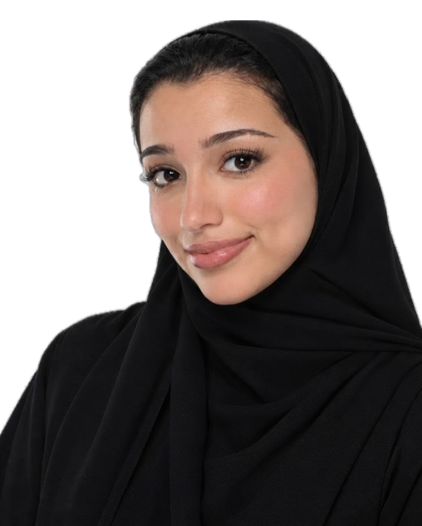

HELLO, I'M
Salwa A. Alahdal
Computer Science Student
Passionate about Cybersecurity, Artificial Intelligence, and Cloud Computing. I enjoy exploring new technologies, building projects, and turning ideas into practical solutions.

A Little About Me
I'm currently pursuing a Bachelor's degree in Computer Science at the University of Jeddah. My experience includes UI/UX design, automation projects, and technical training.
More About Me →